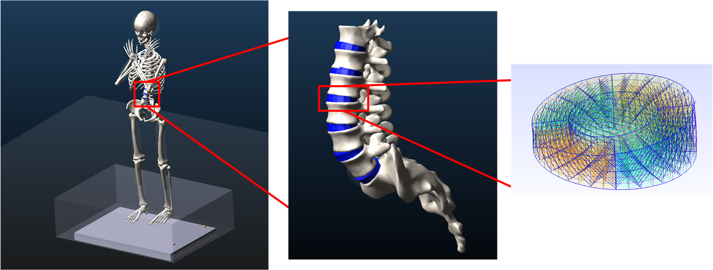
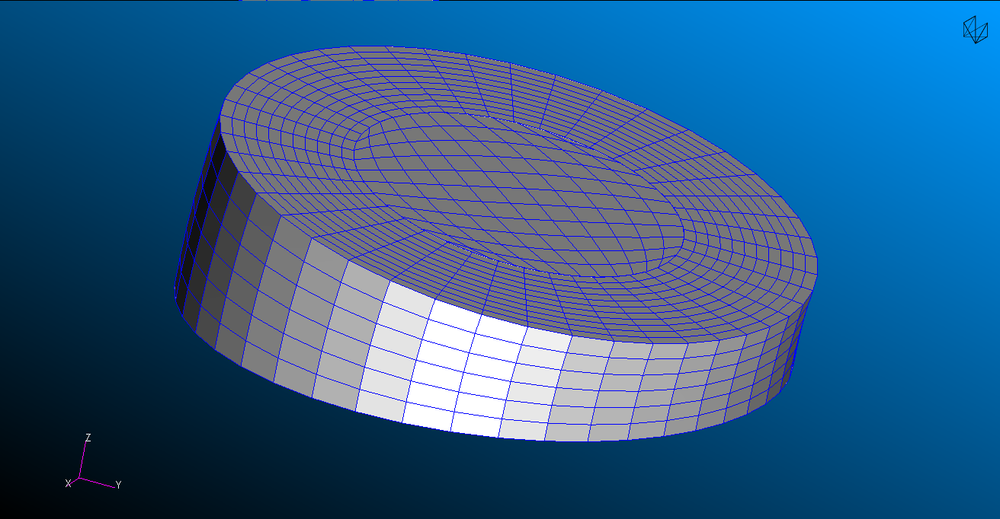
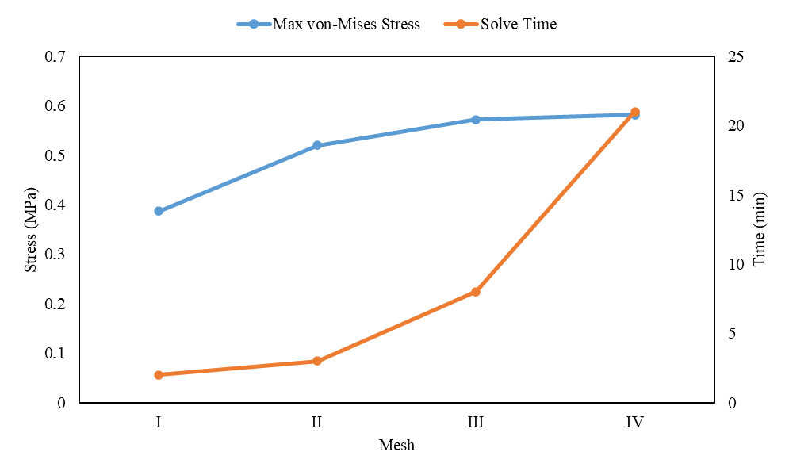
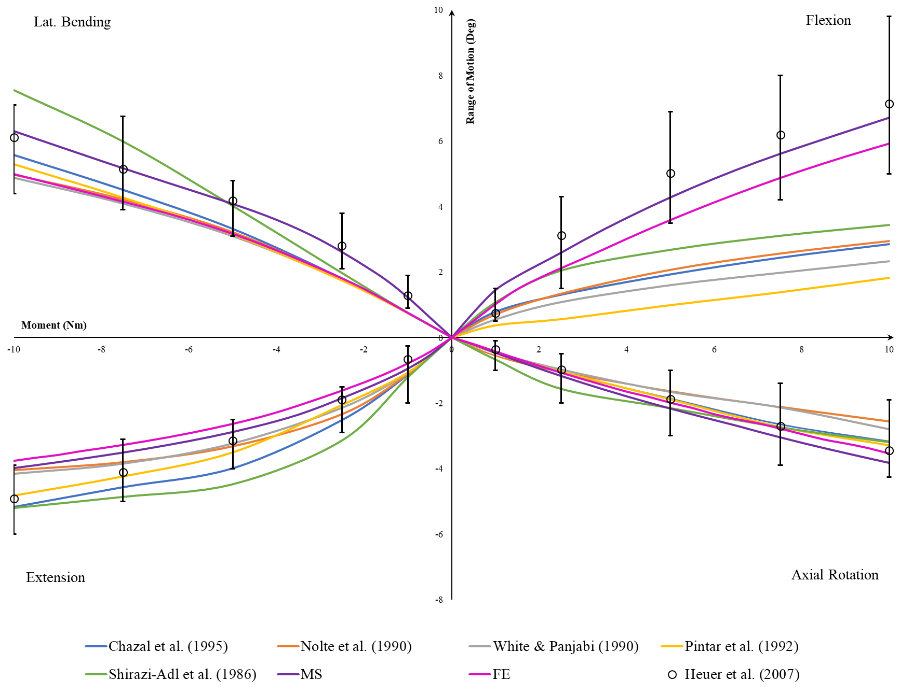
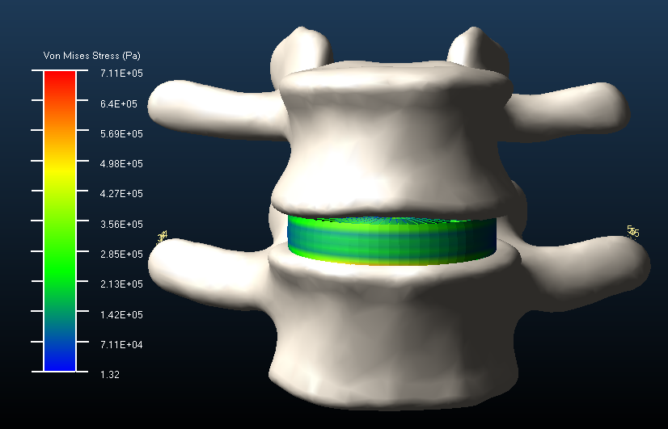
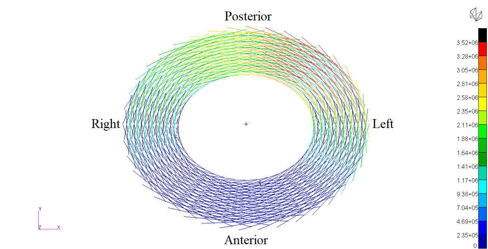

Biomechanical Modeling:
A New Approach to Personalized Analysis of the Lumbar Spine
A curated interactive companion to the original dissertation chapter. Explore the model architecture, mesh sensitivity, validation, and intervertebral disc stress using the chapter’s original figures and reported findings.

ORIGINAL CHAPTER FIGURE · SPINE MODELFrom measurements to a personalized model
The chapter integrates MRI-derived geometry with a biologically assisted musculoskeletal modeling workflow.
Research summary — Data Inputs
Research summary — Model Development
Research summary — Personalization
How much mesh resolution is enough?
Compare the four mesh configurations reported in the chapter. The convergence result is a reported finding, not a new calculation.


Mesh convergence summary
Finite element versus musculoskeletal representation
Original L4–L5 range-of-motion comparison against published in-vitro data, under 500 N compression and 0–10 Nm moment.

Validation summary
Explore stress under different loading directions
Switch between the chapter’s original L4–L5 disc figures for flexion, extension, right lateral bending, and left axial rotation. The loading condition is 500 N compression plus 10 Nm moment.


Disc stress summary
Original Dissertation & Research Context
This site is a selective visual companion, not a replacement for the full dissertation chapter.
Research motivation
Interpretation and next steps
Main contributions
Source Dissertation
This website presents selected methods, figures, and findings from the author's PhD dissertation. The complete dissertation is available through the OhioLINK Electronic Theses and Dissertations repository.
View Full PhD Dissertation ↗